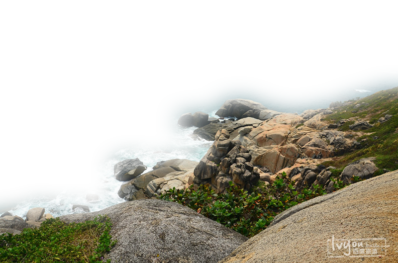

海南（英文名：Hai Nan），是中国南海上的一颗璀璨的明珠，是仅次于台湾的全国第二大岛。海南省是中国陆地面积最小，海洋面积最大的省。 海南岛四周低平，中间高耸，以五指山、鹦歌岭为隆起核心，向外围逐级下降。山地、丘陵、台地、平原构成环形层状地貌，梯级结构明显。海南岛与美国夏威夷处在相近纬度，在长达1528公里的海岸上遍布可以开发建设成为世界一流旅游圣地的旅游资源，岛上终年气候宜人，四季鸟语花香，矿物、动植物资源丰富，尤其石油与天然气蕴藏量可观。所孕育的热带雨林和红树林为中国少有的森林类型，是开展科研、旅游和教学最理想的选择之地。
11月-4月是海南旅游的黄金时间，这时的阳光比起夏季要柔和很多，是穿着夏装漫步沙滩、享受海景、海上娱乐的最好时节。中、西部五指山等热带原始丛林，这时更是层层叠叠，逶迤不尽，非常适合登山探险。
建议游玩5天
三亚市位于海南岛最南端，是中国最南部的滨海旅游城市。因三亚河（古名临川水）由三亚东西河至此会合，成“丫”字形，故取名“三亚”。同时它也是是一个黎、苗、回、汉多民族聚居的地区。 三亚拥有被无数城市嫉妒的清新空气，柔和海滩。在沙滩悠闲散步、沐浴傍晚温和阳光，在海边玩耍，在雨林里面呼吸健康，欣赏自然奇观，一切都是那么令人享受。三亚连续四次成为举办世界小姐总决赛的所在地，同时世界大力士锦标赛，世界比基尼小姐大赛等等国际大赛都因为三亚迷人的热带海滨风光而选择了它。毫无疑问，三亚是中国不可多得的能成为世界顶级度假圣地的城市。 习惯了都市快节奏生活的人们，纷纷涌入这座海滨小城，从而带来了许多城市管理问题。旅游资源的丰富与旅游服务之间的矛盾，导致各种宰客现象层出不穷，这让不少到过三亚的人为之不满。但是这一切都会慢慢改变，因为没有什么会阻挡三亚成为国际度假圣地的脚步。
蜈支洲岛享有“中国第一潜水基地”美誉。是躲在亚龙湾美景身后静静绽放光彩的度假天堂。与亚龙湾相比，它更宁静，也更清丽，有人曾把它称作中国的马尔代夫。更多的人把这里当作和情人逃离尘世后的天堂，因为它有一个更为浪漫和顺口的名字：“情人岛”。蜈支洲岛的中部坡地逶迤，藤蔓缠结，是一片热带植物林，西部及北部形成一弯路玉带状的银色沙滩，沙质均匀细腻，海水颜色明丽动人，层次分明。东部、南部两峰相连，最高峰海拔80米，礁石林立，惊涛拍岸。大风或大潮时，海浪咆哮奔腾激起的浪花可高达十米，形成独特的山海奇观。 蜈支洲中的“蜈支”是一种罕见的海洋壳爬行动物，因为岛的形状很像蜈支所得名。坐落在三亚市北部的海棠湾内，四周海域毫无污染，海水清澈透明，最高能见度达27 米。海底世界五颜六色的热带鱼 和形态各异的珊瑚， 被誉为国内最佳潜水基地 。 蜈支洲岛还拥有众多的海上娱乐项目：潜水、摩托艇、拖曳伞、香蕉船、半潜观光船、快艇海钓等等。
海口旅游资源丰富，有著名的有五公祠、海瑞墓、李硕勋烈士纪念亭、秀英炮台、人民公园、万绿园、假日海滩、热带海洋世界、金牛岭烈士陵园、滨海公园、石山火山口等等景区各具一定特色，且位于市内，交通方便，海南热带野生动植物园、火山口国家地质公园等一批新景区的相继建成标志着正在发展成为集观光游览、度假休闲、疗养健身、商务会展、文化娱乐为一体的多功能、综合型全国热带滨海旅游休闲胜地。有著名的有五公祠、海瑞墓、李硕勋烈士纪念亭、秀英炮台、人民公园、万绿园、假日海滩、热带海洋世界、金牛岭烈士陵园、滨海公园、石山火山口等等景区各具一定特色，且位于市内，交通方便，海南热带野生动植物园、火山口国家地质公园等一批新景区的相继建成标志着正在发展成为集观光游览、度假休闲、疗养健身、商务会展、文化娱乐为一体的多功能、综合型全国热带滨海旅游休闲胜地。有著名的有五公祠、海瑞墓、李硕勋烈士纪念亭、秀英炮台、人民公园、万绿园、假日海滩、热带海洋世界、金牛岭烈士陵园、滨海公园、石山火山口等等景区各具一定特色，且位于市内，交通方便，海南热带野生动植物园、火山口国家地质公园等一批新景区的相继建成标志着正在发展成为集观光游览、度假休闲、疗养健身、商务会展、文化娱乐为一体的多功能、综合型全国热带滨海旅游休闲胜地。
三沙市是由国务院于2007年11月批准设立的县级市。三沙市管辖着位于中国南海的海南省下的西沙、南沙、中沙三个群岛，隶属海南省，面积260万平方公里，相当于中国领土的四分之一。它是我国面积最大、人口最少的县级市，也是中国领土最南端的城市。 由于西南中沙群岛及其海域所处的特殊地理位置，长期以来一直处于军事化管理状态，除西沙永兴岛上有一定数量的驻岛职工、民工和渔民外，其余岛屿少有人常驻，多数渔民以流动作业为主，因此经济社会发展相对落后。近年来，由于永兴岛的基础设施建设不断改善，使永兴岛已初具小城镇雏形。